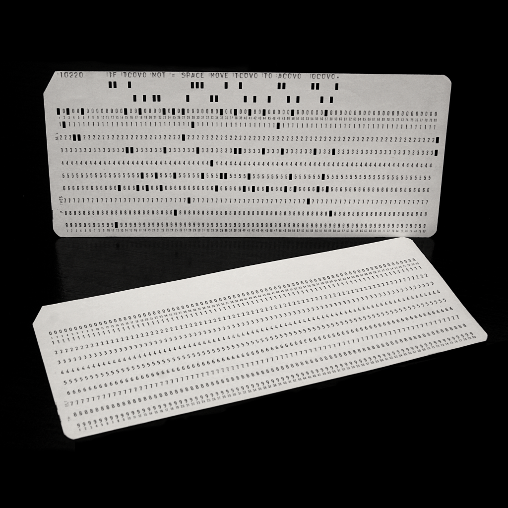

Conceptual simulation of positional encoding, not a historical punched-card format. Each column reads as a 6-bit number: 1 = A … 26 = Z.
Early 1800s–1900s / Mechanical & Computer Data Processing / Paper
Information Through Absence. A physical information system that encodes data through the presence or absence of holes in predetermined positions on a card.
In the early 1800s, Joseph Marie Jacquard developed a loom controlled by punched cards to produce complex textile patterns. Later, Herman Hollerith adapted punched-card technology for data processing, including the 1890 U.S. Census. Punched cards eventually became a major medium for storing and processing computer data.
Each card contains predefined positions where holes can be punched. Machines detect the presence or absence of holes and interpret their arrangements as instructions or data. Different punched-card systems use different layouts and encoding rules.